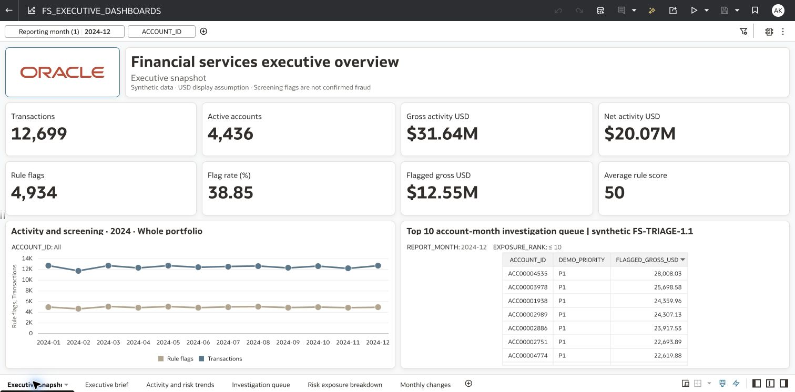
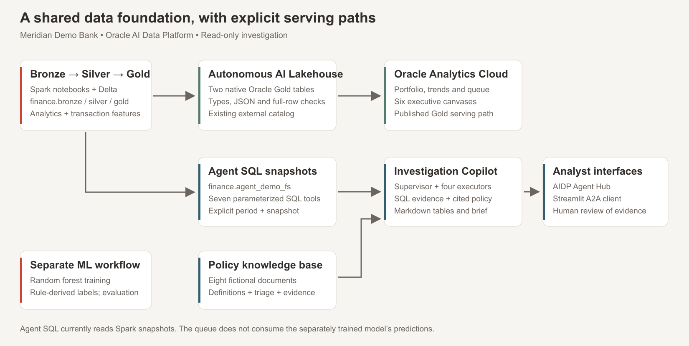
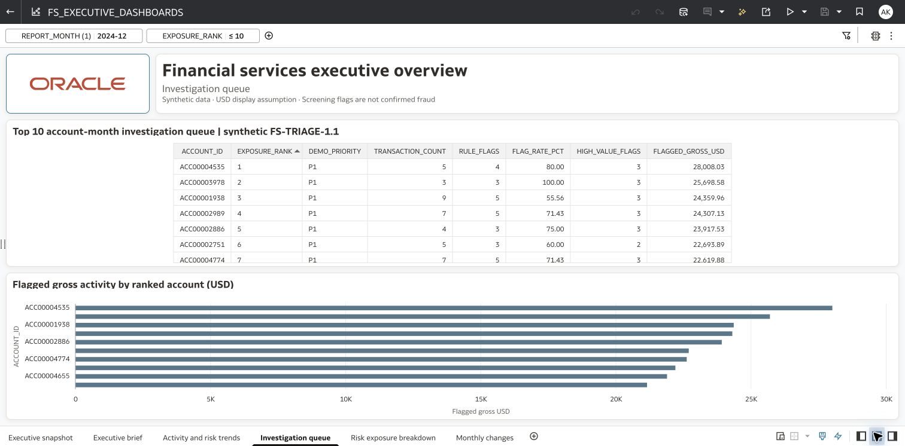
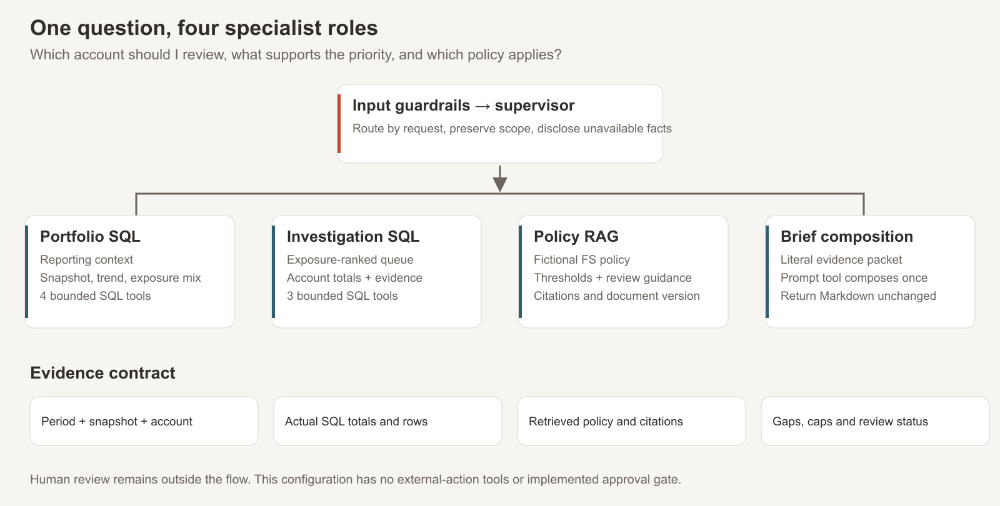
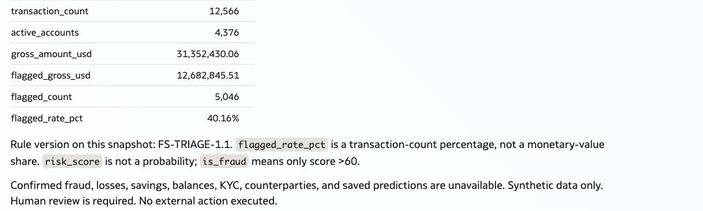
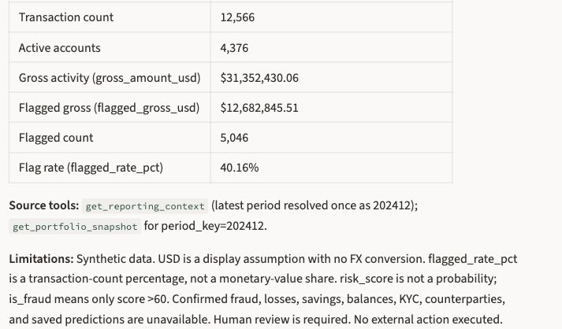

Why a Financial Investigation Copilot Starts with the Data Foundation
An evidence-led analyst workflow with Oracle AI Data Platform, Autonomous AI Lakehouse and Oracle Analytics Cloud
Abhijit Khuperkar · 18 October 2026
A financial investigation copilot is useful only if an analyst can trace its recommendation back to the records, definitions and reporting period behind it.
Consider a monthly review at the fictional Meridian Demo Bank. The analyst needs to answer three questions: Which accounts should I investigate first? What evidence supports that order? Which policy applies? Answering them usually means moving between a dashboard, transaction extracts and policy documents. A conversational interface can bring that work together, provided the numbers and the explanation remain connected.
I built this demonstration around that requirement. Oracle AI Data Platform provides the engineering and agent workbench; Autonomous AI Lakehouse serves published Gold data for Oracle Analytics Cloud; SQL tools and a policy knowledge base support the investigation conversation. The interesting design decision is how these parts share meaning while retaining clear boundaries.
Why the foundation deserves attention
The data problem is well documented. In a February 2025 Gartner publication, 63% of organizations lacked, or were uncertain about having, suitable data-management practices for AI. The underlying July 2024 survey covered 1,203 data-management leaders.
There is a workflow problem alongside it. McKinsey’s March 2025 State of AI survey found that 21% of respondents whose organizations used generative AI reported fundamental redesign of at least some workflows. That is a finding about workflow change among those respondents, rather than a measure of how many AI systems are disconnected from enterprise data.
For this project, the implication is practical: build the reporting definitions, evidence access and analyst handoff together. A strong language model cannot resolve an undocumented difference between two snapshots or decide what a business means by “exposure.” Those decisions belong in the data contract. For an analyst, that contract makes a follow-up question dependable: the account, month, calculation and policy version must stay consistent as the conversation moves from summary to detail.
Start with the decision on the dashboard
The verified December 2024 OAC reference gives the analyst a concrete starting point.
Demonstration dataset; amounts shown in USD. The denomination is an explicit scenario assumption; no FX conversion or numerical rescaling is applied.
| December 2024 measure | Reference value |
|---|---|
| Transactions | 12,699 |
| Active accounts | 4,436 |
| Gross activity | USD 31,642,312.97 |
| Rule-flagged transactions | 4,934 |
| Rule flag rate | 38.85% |
| Flagged gross activity | USD 12,547,752.55 |
| Accounts meeting P1 review rules | 528 |

Figure 1. The executive view establishes the period, portfolio scale and measures before the investigation begins.
Gross activity is the sum of absolute transaction amounts. Net activity retains their signs. Keeping those measures separate prevents incoming and outgoing amounts from cancelling the volume under review. The flag rate is a transaction-count ratio, not the share of money flagged.
These definitions look straightforward. Their value becomes apparent when a dashboard, a SQL result and a generated brief must explain the same account.
Give each data layer a clear responsibility
The engineering pipeline uses Spark and Delta tables in three schemas: finance.bronze, finance.silver and finance.gold.
| Layer | Responsibility in this demonstration | Downstream value |
|---|---|---|
| Bronze | Retain generated transaction records | A reference for the transformation path |
| Silver | Check required fields and derive time features | Consistent inputs for subsequent processing |
| Gold | Produce account-month analytics and transaction-level ML features | Reusable analytical and modelling inputs |
The reference Gold data covers January–December 2024: 149,658 transaction rows, 52,735 account-month analytics rows and 5,000 accounts. The grain matters. An account-month aggregate is useful for trend analysis; transaction-level records are needed to explain individual activity. Treating them as interchangeable would create misleading counts and joins.
Oracle documents medallion processing, Spark notebooks and machine-learning workloads as AI Data Platform use cases. Here, those capabilities provide an organized route from source records to reusable data products. The demonstration’s Silver checks are deliberately limited; an enterprise implementation would extend them with source-specific validation, reconciliation and quality ownership.
Make the actual consumption paths visible
The architecture has two structured-data serving paths.
The OAC path publishes two Gold tables through an AILH external catalog into a native Oracle schema. OAC uses that published data for the analytical experience. The existing agent path uses seven predefined SQL tools against dedicated Spark snapshot tables in finance.agent_demo_fs. Eight documents supply fictional policy, definitions and investigation guidance through retrieval.

Figure 2. The deployed paths are explicit: the agent’s SQL tools currently query Spark snapshots; OAC consumes the AILH publication.
Oracle’s external-catalog documentation explains how external-source metadata becomes discoverable and queryable in the platform. In this implementation, creating the native Gold tables is a publication step with its own verification. Catalog registration alone does not establish that the copied rows agree.
That distinction avoids a common architectural shortcut: drawing every consumer behind one box while the running system still uses different serving tables. A shared foundation needs an explicit snapshot contract across those paths.
Move from a portfolio view to an investigation
The investigation queue ranks flagged account-months by flagged gross activity, then flagged transaction count, then account ID. The P1/P2 designation appears alongside that exposure order.
In the December OAC reference, ACC00004535 leads the queue with USD 28,008.03 in flagged gross activity. The top ten accounts together account for USD 236,847.35, or 1.89% of the month’s flagged gross. The queue therefore provides a useful starting order, while the portfolio still requires broader review.

Figure 3. Exposure rank helps select the next account; the priority label explains which review rule it meets.
The fictional FS-POL-001 v1.1 policy makes those rules precise. A transaction is flagged when its score is strictly greater than 60. An account-month is P1 when its flagged gross is at least USD 10,000, or it contains a transaction with score at least 85 and absolute amount at least USD 5,000.
The AND/OR relationship matters as much as the thresholds. A generated explanation that changes it can sound plausible while assigning the wrong priority.
Let SQL establish facts and retrieval explain policy
The agent flow separates portfolio analysis, account investigation, policy retrieval and brief composition under a supervisor. Its SQL tools cover reporting context, portfolio snapshot and trend, exposure mix, priority accounts, account snapshot and transaction evidence.
Oracle’s agent-tool documentation describes SQL tools as design-time queries with runtime parameters. It also describes RAG tools that retrieve relevant knowledge-base content. This gives the model a bounded way to obtain facts and policy context rather than inventing a query for every question.

Figure 4. Structured facts and retrieved policy meet in the analyst brief.
A useful analyst request is: “For the latest available month, investigate the highest-exposure flagged account. Show the portfolio context, account totals, transaction evidence and applicable policy.”
The intended answer starts by establishing the available period and snapshot. It then obtains the portfolio and account measures, retrieves evidence patterns and policy sections, and composes a brief with citations, gaps and review steps. A follow-up can narrow the evidence without changing the account or month.
This is where conversation can reduce manual assembly: the analyst can ask for the meaning behind a number while retaining the context of the investigation. There are no external action tools or implemented approval workflow in this package. Decisions about account restrictions or case disposition remain outside it.

Figure 5. Agent Hub focused SQL capture, December 2024 USD. Cropped client metric detail from the older serving snapshot; separate from the OAC reference.

Figure 6. Streamlit focused SQL capture, December 2024 USD. The matching metrics establish this focused pass; they do not validate the hybrid brief.
Methodology and current evidence
Meridian Demo Bank uses generated transaction data and fictional policies. The notebook derives is_fraud from risk_score > 60, using randomly generated scores. Its separate random forest exercise does not supply the agent’s queue or establish validated fraud-detection performance. The workflow demonstrates how to assemble screening evidence for analyst review; flagged gross is not confirmed fraud or loss, and the scores are not calibrated probabilities.
The OAC figures use the reference verified on 17 October 2026, with source Delta version 4. The deployed-agent/Streamlit reference uses an older snapshot with different December totals, so each path must retain its own reporting context. Initial publication of both native AILH tables passed full-row comparison; changed-data replacement remains pending validation. Full metric definitions, model boundaries, data gaps and publication details are in the metrics and methodology guide.
Fresh focused SQL responses in USD from Agent Hub and Streamlit on 18 October 2026 matched SQL on the older serving snapshot, and the standalone policy RAG test passed with version 1.1. The fresh hybrid response still failed transaction-row reconciliation, repeating the historical evidence-fidelity issue. The hosted acceptance record preserves both results: focused SQL and policy retrieval work, while the combined investigation brief remains unvalidated.
What I would validate in a customer POC
I would begin with a single investigation workflow and an agreed reporting cut. The first acceptance criterion would be numerical: dashboard, SQL tools and analyst brief must identify their snapshot and reconcile at the correct grain. The next would be semantic: the brief must preserve policy thresholds, retrieve the applicable version and distinguish unavailable facts from available screening measures.
Operational validation would then cover refresh behavior, permissions, stopped compute, tool failures and evidence completeness. Analyst value should be measured through time to assemble a review packet and the amount of rework needed to verify it. This demonstration has not measured those improvements.
For an ML extension, I would establish a separate validation track using representative labelled outcomes, appropriate evaluation and monitored deployment. Connecting a model output to an agent becomes useful after its meaning and performance have been established.
The companion repository contains the notebooks, SQL tools, policy corpus, client application and validation guidance. The walkthrough video will be linked here: {{YOUTUBE_DEMO_URL}}.
The architecture’s value is the path it makes reviewable: from a monthly portfolio question to an account, from that account to evidence, and from evidence to a policy-supported analyst decision. Building that path starts with the data foundation.